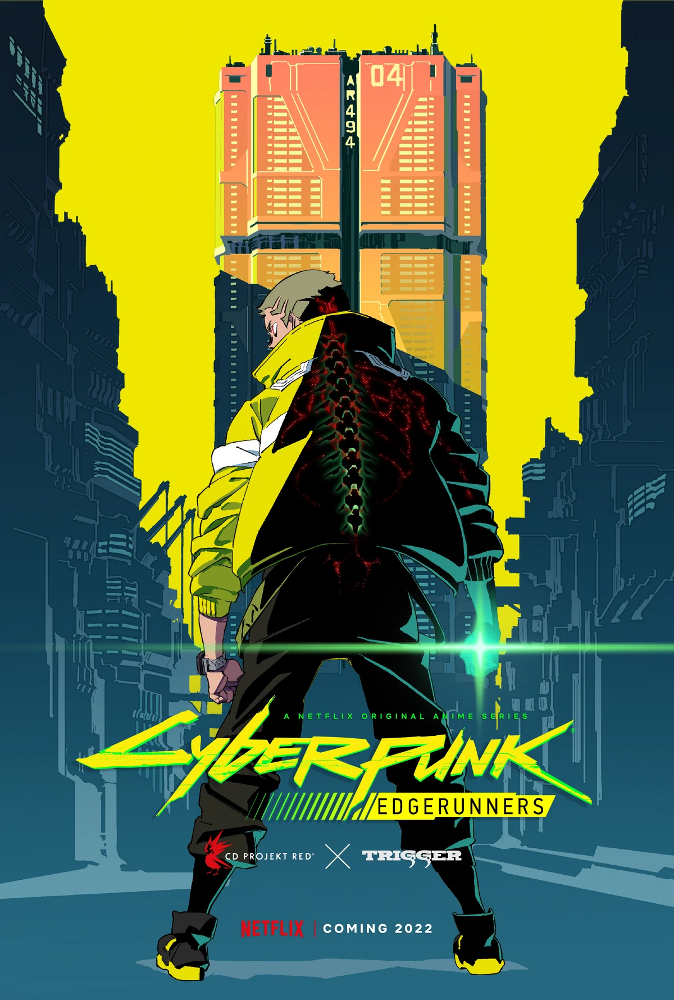
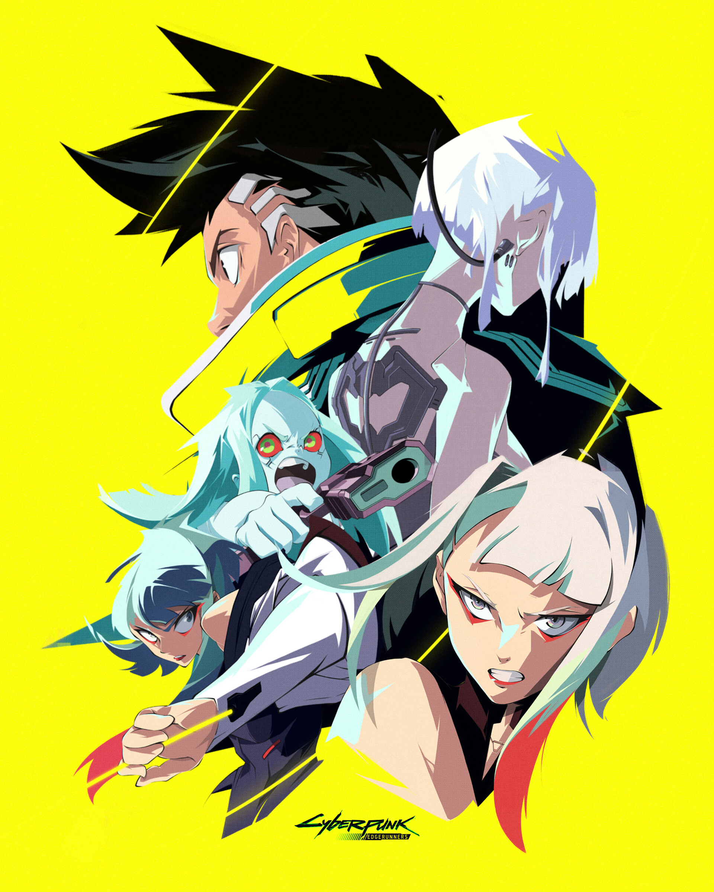

Cyberpunk: Edgerunners é ambientado em Night City, uma metrópole autossuficiente localizada no Estado Livre da Califórnia assolada por corrupção, vícios por cibernéticas e violência de gangues. A cidade é dividida em seis distritos, cada um com seus próprios estilos de vida específicos, e é controlada por várias megacorporações diferentes, incluindo a Arasaka e sua rival Militech. A história do anime se passa principalmente em Santo Domingo, o distrito mais antigo, pobre e industrial de Night City.
Em uma distopia dominada por corrupção, crime e implantes cibernéticos, um garoto de rua impulsivo mas talentoso chamado David perde tudo o que tem em um tiroteio. Depois disso, ele faz a escolha de sobreviver do lado errado da lei como um "mercenário"; um agente fora da lei capacitado com alta tecnologia do mercado negro também conhecido como "cyberpunk".
Night City é uma cidade fictícia no Estado Livre da Califórnia do Norte e que está localizada na costa oeste dos Estados Unidos. Diz-se que a população tem cerca de seis milhões de habitantes em seus muitos bairros, o que a torna a cidade mais populosa da Califórnia. Em 2077, a cidade foi eleita o "Pior lugar para se viver na América".
Uma comunidade urbana planejada originalmente fundada por Richard Night em 1994, foi estabelecida na cabeça da Baía de Del Coranado e voltada para o Oceano Pacífico a oeste, Night City é considerada uma metrópole multicultural moderna e próspera do século 21 - Século invadido por corporações, corrupção, crime organizado e violência de gangues. Possui ruas largas e densos arranha-céus urbanos que abrigam milhões de pessoas. Ela opera como uma cidade-estado totalmente independente com a Arasaka Corporation tendo o controle total.
Night City é considerada um local emocionante e empolgante para se visitar, bem como um lugar interessante e vibrante para viver para aqueles que têm recursos, e uma paisagem infernal para os desprivilegiados da cidade; seu slogan mundialmente famoso é "A cidade no limite do amanhã".